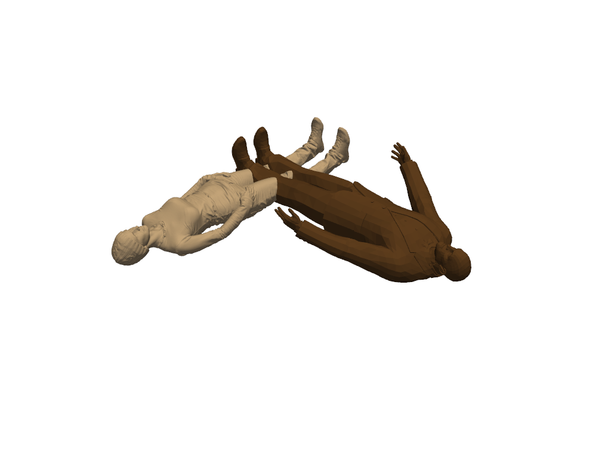
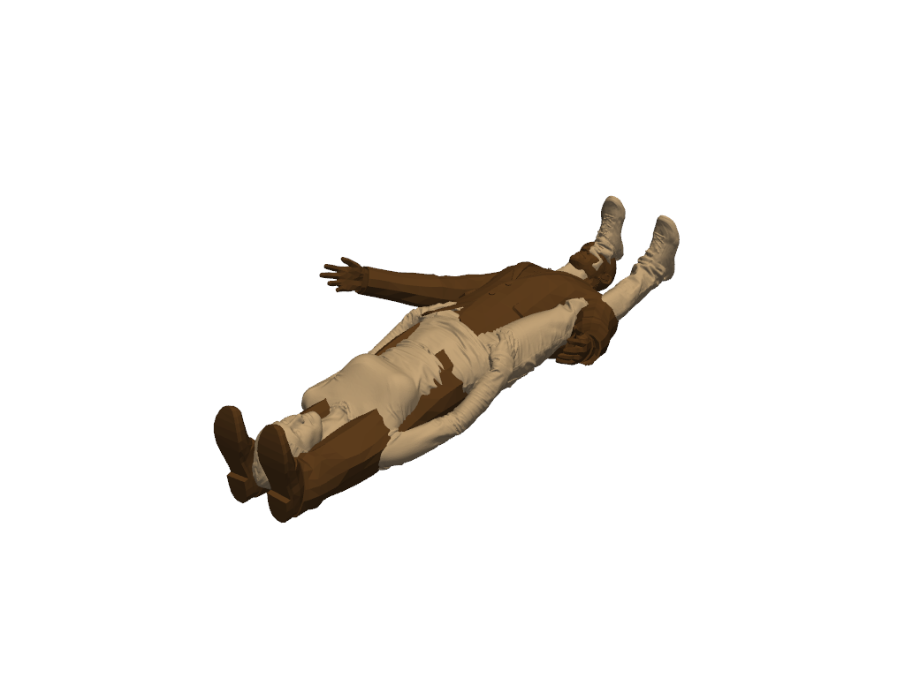
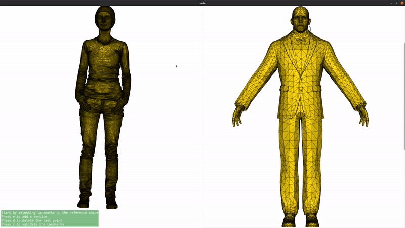
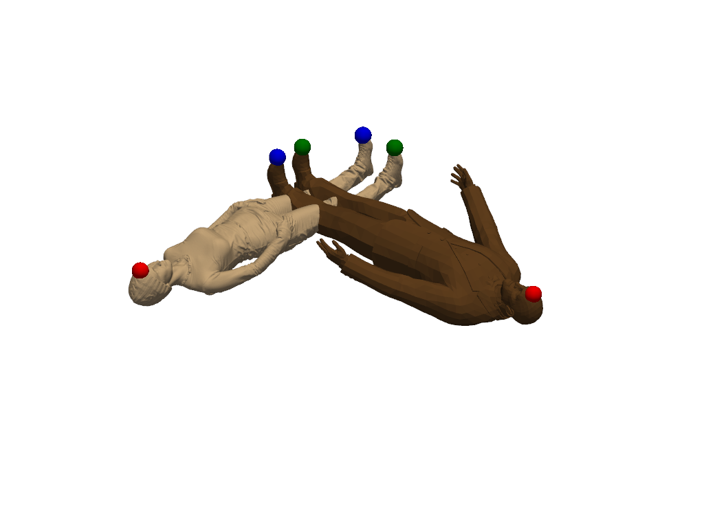
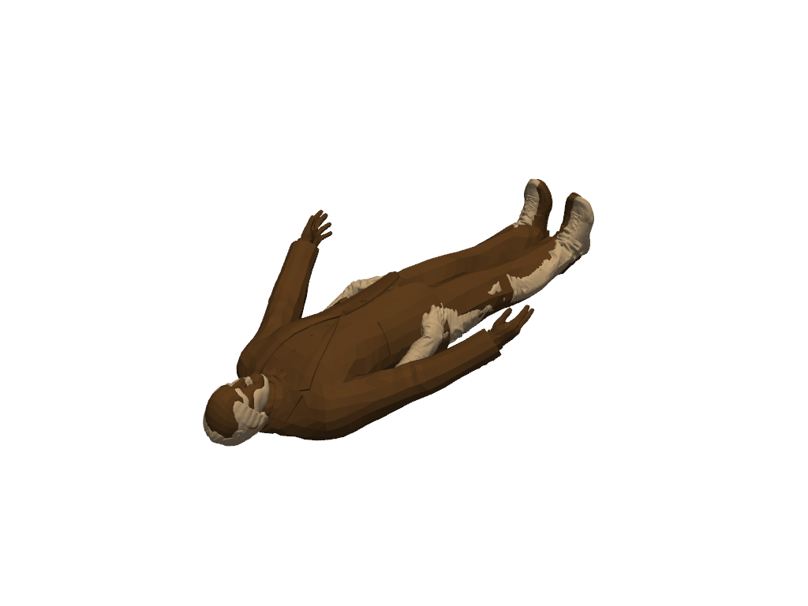

Note
Go to the end to download the full example code
Rigid alignment in 3D with landmarks¶
In this example, we demonstrate how to perform rigid registration (also known alignment) of two 3D meshes. We also show how to improve the registration by adding landmarks.
Load data¶
We load two meshes from the pyvista example datasets. We then rescale them to lie in the unit cube to avoid dealing with scale issues.
# shape1 = sks.PolyData(examples.download_human())
shape1 = sks.PolyData(examples.download_woman().rotate_y(90))
shape2 = sks.PolyData(examples.download_doorman())
shape1.point_data.clear()
shape2.point_data.clear()
def bounds(shape):
return torch.max(shape.points, dim=0).values - torch.min(shape.points, dim=0).values
lims1 = bounds(shape1)
lims2 = bounds(shape2)
rescale1 = torch.max(lims1)
shape1.points -= torch.min(shape1.points, dim=0).values
shape1.points /= rescale1
rescale2 = torch.max(lims2)
shape2.points -= torch.min(shape2.points, dim=0).values
shape2.points /= rescale2
/opt/hostedtoolcache/Python/3.11.9/x64/lib/python3.11/site-packages/skshapes/input_validation/converters.py:102: UserWarning: Mesh has been cleaned and points were removed. point_data is ignored.
return func(*new_args, **kwargs)
Plot the data¶
Let us have a look at the two shapes we want to align. Clearly, they are not aligned and a rigid transformation is needed.

Apply the registration¶
We now apply the registration. The meshes points are not in correspondence and we need to use a loss function that can handle this. We use the nearest neighbors loss. Using this loss leads to converge to a local minimum, where the shapesa are aligned upside down.
loss = sks.NearestNeighborsLoss()
model = sks.RigidMotion()
registration = sks.Registration(
model=model,
loss=loss,
n_iter=2,
verbose=True,
) # default optimizer is torch.optim.LBFGS
registration.fit(source=shape2, target=shape1)
morph = registration.transform(source=shape2)
plotter = pv.Plotter()
plotter.add_mesh(shape1.to_pyvista(), color=color_1)
plotter.add_mesh(morph.to_pyvista(), color=color_2)
plotter.show()

[KeOps] Generating code for ArgKMin_Reduction reduction (with parameters 0) of formula Sum((a-b)**2) with a=Var(0,3,0), b=Var(1,3,1) ... OK
[pyKeOps] Compiling pykeops cpp 346a12ed2c module ... OK
Initial loss : 4.28e-01
= 4.28e-01 + 1 * 0.00e+00 (fidelity + regularization_weight * regularization)
Loss after 1 iteration(s) : 1.45e-01
= 1.45e-01 + 1 * 0.00e+00 (fidelity + regularization_weight * regularization)
Loss after 2 iteration(s) : 4.74e-02
= 4.74e-02 + 1 * 0.00e+00 (fidelity + regularization_weight * regularization)
Add landmarks¶
We now add landmarks to the two shapes. Three landmarks (head, left hand, right hand) are enough to greatly improve the registration. If you are running this script locally, you can use the landmark setter application to select the landmarks interactively. If you are seeing this in the gallery, here is a recording of the landmark setter application being used to select the landmarks:

if not pv.BUILDING_GALLERY:
# If not in the gallery, we can use vedo to open the landmark setter
# Setting the default backend to vtk is necessary when running in a notebook
import vedo
vedo.settings.default_backend= 'vtk'
sks.LandmarkSetter([shape1, shape2]).start()
else:
# Set the landmarks manually
landmarks1 = [4808, 147742, 1774]
landmarks2 = [325, 2116, 1927]
shape1.landmark_indices = landmarks1
shape2.landmark_indices = landmarks2
colors = ["red", "green", "blue"]
plotter = pv.Plotter()
plotter.add_mesh(shape1.to_pyvista(), color=color_1)
for i in range(len(shape1.landmark_indices)):
plotter.add_points(
shape1.landmark_points[i].numpy(),
color=colors[i % 3],
render_points_as_spheres=True,
point_size=25,
)
plotter.add_mesh(shape2.to_pyvista(), color=color_2)
for i in range(len(shape2.landmark_indices)):
plotter.add_points(
shape2.landmark_points[i].numpy(),
color=colors[i % 3],
render_points_as_spheres=True,
point_size=25,
)
plotter.show()

Register again with a loss that includes landmarks¶
Now the loss is the sum of NearestNeighborsLoss and LandmarkLoss, the mean L2 distance between the landmarks in the two shapes. The registration now converges to a better solution.
loss_landmarks = sks.NearestNeighborsLoss() + sks.LandmarkLoss()
registration = sks.Registration(
model=model,
loss=loss_landmarks,
n_iter=2,
verbose=True,
)
registration.fit(source=shape2, target=shape1)
morph = registration.transform(source=shape2)
plotter = pv.Plotter()
plotter.add_mesh(shape1.to_pyvista(), color=color_1)
plotter.add_mesh(morph.to_pyvista(), color=color_2)
plotter.show()

Initial loss : 1.58e+00
= 1.58e+00 + 1 * 0.00e+00 (fidelity + regularization_weight * regularization)
Loss after 1 iteration(s) : 7.36e-02
= 7.36e-02 + 1 * 0.00e+00 (fidelity + regularization_weight * regularization)
Loss after 2 iteration(s) : 7.13e-02
= 7.13e-02 + 1 * 0.00e+00 (fidelity + regularization_weight * regularization)
Total running time of the script: (1 minutes 12.836 seconds)